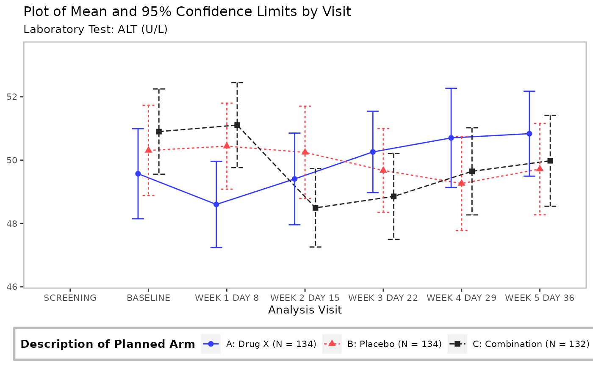
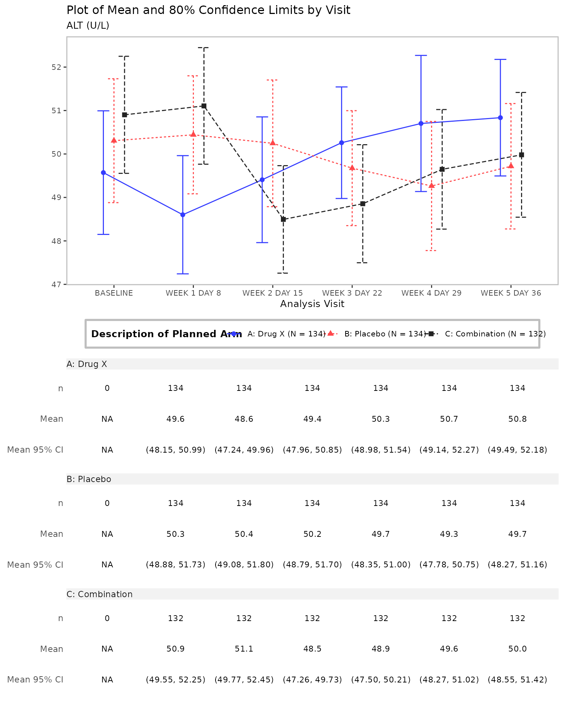

Introduction to tern
This vignette shows the general purpose and syntax of the
tern R package.
The tern R package contains analytical functions for
creating tables and graphs useful for clinical trials and other
statistical analysis. The main focus is on the clinical trial reporting
tables but the graphs related to the clinical trials are also valuable.
The core functionality for tabulation is built on top of the more
general purpose rtables package.
Common Clinical Trials Analyses
The package provides a large range of functionality to create tables and graphs used for clinical trial and other statistical analysis.
rtables tabulation extended by clinical trials specific
functions:
- demographics
- unique patients
- exposure across patients
- change from baseline for parameters
- statistical model fits: MMRM, logistic regression, Cox regression, …
- …
rtables tabulation helper functions:
- pre-processing
- conversions and transformations
- …
data visualizations connected with clinical trials:
- Kaplan-Meier plots
- forest plots
- line plots
- …
data visualizations helper functions:
- arrange/stack multiple graphs
- embellishing graphs/tables with metadata and details, such as adding titles, footnotes, page number, etc.
- …
The reference of tern functions is available on the
tern website functions reference.
Analytical Functions for rtables
Analytical functions are used in combination with other
rtables layout functions, in the pipeline which creates the
rtables table. They apply some statistical logic to the
layout of the rtables table. The table layout is
materialized with the rtables::build_table function and the
data.
The tern analytical functions are wrappers around the
rtables::analyze function; they offer various methods
useful from the perspective of clinical trials and other statistical
projects.
Examples of the tern analytical functions are
tern::count_occurrences,
tern::summarize_ancova and
tern::summarize_vars. As there is no one prefix to identify
all tern analytical functions it is recommended to use the
reference subsection on the
tern website.
In the rtables code below we first describe the two
tables and assign the descriptions to the variables lyt and
lyt2. We then built the tables using the actual data with
rtables::build_table. The description of a table is called
a table layout. The analyze
instruction adds to the layout that the ARM
variable should be analyzed with the mean analysis function
and the result should be rounded to 1 decimal place. Hence, a
layout is “pre-data”; that is, it’s a description of
how to build a table once we get data.
Defining the table layout with a pure rtables code.
# Create table layout pure rtables
lyt <- rtables::basic_table() %>%
rtables::split_cols_by(var = "ARM") %>%
rtables::split_rows_by(var = "AVISIT") %>%
rtables::analyze(vars = "AVAL", mean, format = "xx.x")Below the only tern function is
summarize_vars which replaces the
rtables::analyze function above.
# Create table layout with tern summarize_vars analyze function
lyt2 <- rtables::basic_table() %>%
rtables::split_cols_by(var = "ARM") %>%
rtables::split_rows_by(var = "AVISIT") %>%
tern::summarize_vars(vars = "AVAL", .formats = c("mean_sd" = "(xx.xx, xx.xx)"))
# Apply table layout to data and produce `rtables` object
adrs <- formatters::ex_adrs
rtables::build_table(lyt, df = adrs)
#> A: Drug X B: Placebo C: Combination
#> ——————————————————————————————————————————————————————————
#> SCREENING
#> mean 3.0 3.0 3.0
#> BASELINE
#> mean 2.5 2.8 2.5
#> END OF INDUCTION
#> mean 1.7 2.1 1.6
#> FOLLOW UP
#> mean 2.2 2.9 2.0
rtables::build_table(lyt2, df = adrs)
#> A: Drug X B: Placebo C: Combination
#> ———————————————————————————————————————————————————————————————
#> SCREENING
#> n 154 178 144
#> Mean (SD) (3.00, 0.00) (3.00, 0.00) (3.00, 0.00)
#> Median 3.0 3.0 3.0
#> Min - Max 3.0 - 3.0 3.0 - 3.0 3.0 - 3.0
#> BASELINE
#> n 136 146 124
#> Mean (SD) (2.46, 0.88) (2.77, 1.00) (2.46, 1.08)
#> Median 3.0 3.0 3.0
#> Min - Max 1.0 - 4.0 1.0 - 5.0 1.0 - 5.0
#> END OF INDUCTION
#> n 218 205 217
#> Mean (SD) (1.75, 0.90) (2.14, 1.28) (1.65, 1.06)
#> Median 2.0 2.0 1.0
#> Min - Max 1.0 - 4.0 1.0 - 5.0 1.0 - 5.0
#> FOLLOW UP
#> n 164 153 167
#> Mean (SD) (2.23, 1.26) (2.89, 1.29) (1.97, 1.01)
#> Median 2.0 4.0 2.0
#> Min - Max 1.0 - 4.0 1.0 - 4.0 1.0 - 4.0We see that tern offers advanced analysis by extending
rtables function calls with only one additional function
call.
More examples with tabulation analyze functions are presented
in the Tabulation vignette.
Clinical Trials Visualizations
Clinical trial related plots complement the rich palette of
tern tabulation analysis functions. Thus the
tern package delivers a full-featured tool for clinical
trial reporting. The tern plot functions return
ggplot2 or gTree objects, the latter is
returned when a table is attached to the plot.
adsl <- formatters::ex_adsl
adlb <- formatters::ex_adlb
adlb <- dplyr::filter(adlb, PARAMCD == "ALT", AVISIT != "SCREENING")The optional nestcolor package can be loaded in to apply
the standardized NEST color palette to all tern plots.
Line plot without a table generated by the
tern::g_lineplot function.
# Mean with CI
tern::g_lineplot(adlb, adsl, subtitle = "Laboratory Test:")
Line plot with a table generated by the tern::g_lineplot
function.
# Mean with CI, table and customized confidence level
tern::g_lineplot(
adlb,
adsl,
table = c("n", "mean", "mean_ci"),
title = "Plot of Mean and 80% Confidence Limits by Visit"
)
The first plot is a ggplot2 object and the second plot
is a gTree object, as the latter contains the table. The
second plot has to be properly resized to get a clear and readable table
content.
The tern functions used for plot generation are mostly
g_ prefixed. All tern plot functions are
listed on the
tern website functions reference.
Interactive Apps
Most of tern outputs could be easily accommodated into
shiny apps. We recommend applying tern outputs
into teal apps. The teal
package is a shiny-based interactive exploration framework for
analyzing data. teal shiny apps with tern
outputs are available in the teal.modules.clinical
package.
Summary
In summary, tern contains many additional functions for
creating tables, listing and graphs used in clinical trials and other
statistical analyses. The design of the package gives users a lot of
flexibility to meet the analysis needs in a regulatory or exploratory
reporting context.
For more information please explore the tern website.